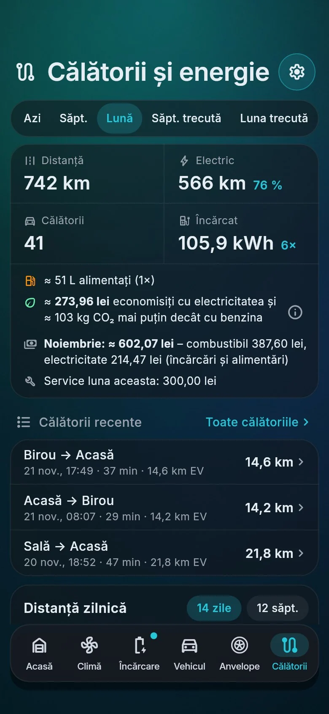
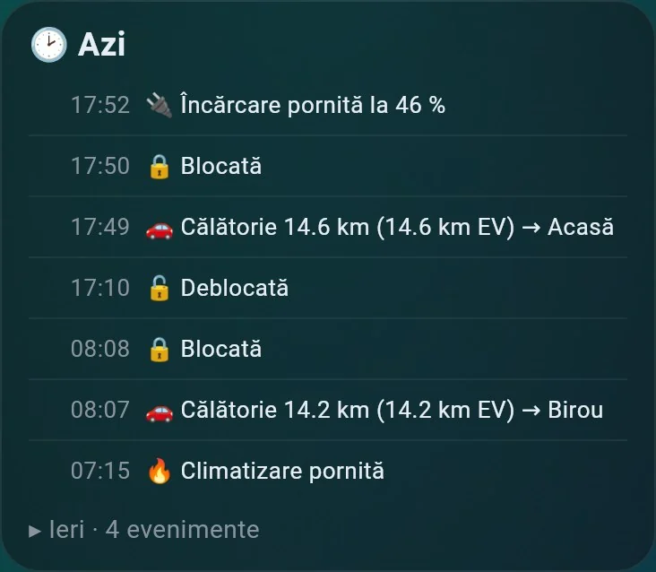
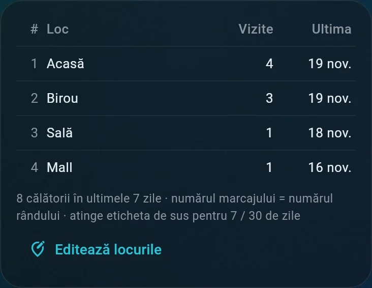
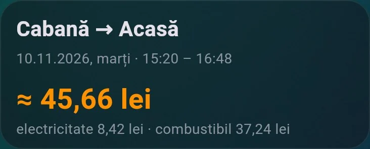
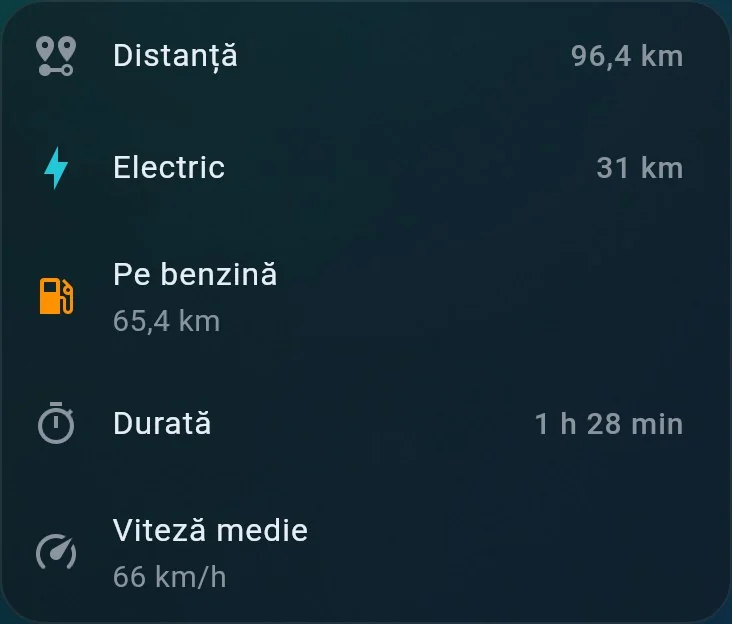

Călătorii și trasee
Fiecare călătorie, înregistrată automat.
Fără buton de start și fără foaie de parcurs de completat. Carmeo observă fiecare călătorie și păstrează distanța, ponderea electrică și costul.


Ziua ta, ca o cronologie.
Călătorii, încărcări, blocare și deblocare, pornirea climatizării – în ordinea în care s-au întâmplat.


Pe unde ai fost.
Harta călătoriilor arată locurile vizitate în ultimele 7 sau 30 de zile, numerotate după cât de des ai fost acolo. Denumește-ți locurile obișnuite și vor apărea peste tot cu numele lor.


Fiecare călătorie în detaliu.
Distanță, durată și viteză medie, cât s-a mers electric și cât pe benzină, energia și combustibilul consumate – și cât a costat călătoria cu prețurile tale.
Înregistrarea locației poate fi pusă pe pauză oricând. Călătoriile sunt atunci înregistrate fără locuri.
Încearc-o pe mașina ta.
Carmeo este gratuit. Intră în grupul de testare deschisă pe iPhone sau Android.